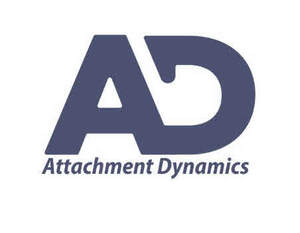

Trade Mark Journal No.2025/026 27 June 2025
UK00004214395 5 June 2025 (16,35,41,44,45)

- Class 16
- Instructional and teaching materials; Instructional and teaching material; Teaching materials; Instructional materials; Educational and instructional material; Instructional manuals for teaching purposes; Paper teaching materials; Printed teaching materials; Instructional and teaching material (except apparatus); Teaching materials [except apparatus]; Printed teaching material; Teaching manuals; Instructional manuals; Printed educational materials; Manuals for instructional purposes; Printed teaching activity guides; Printed training materials; Instructional material (except apparatus); Printed matter for instructional purposes.
- Class 35
- Customer relationship management; Business management consultancy in the field of executive and leadership development; Providing assistance in the field of business management within the framework of a franchise contract; Professional consultancy relating to business management; Business process management and consulting; Management advice relating to the recruitment of staff; Business organization and management consulting; Advice relating to business management; Assistance and advice regarding business organization and management; Business organisation and management consulting; Advice relating to business organization; Professional business consulting; Assistance and advice regarding business organisation and management; Consultancy relating to business management; Business management and consulting; Business management consulting; Management assistance in business affairs; Assistance and consultancy relating to business management and organisation; Business management and consultation; Business management consultation; Business management advice; Consultancy relating to business management and organisation; Business management advice relating to manufacturing business; Business management and organization consultancy.
- Class 41
- Coaching; Life coaching (training); Personal coaching [training]; Coaching [training]; Coaching services; Training or education services in the field of life coaching; Education and training services in relation to business management; Business mentoring services; Personal development training; Training services relating to business management; Team building (education); Education, teaching and training; Consultancy services relating to the education and training of management and of personnel; Provision of training courses in personal development; Courses (Training -) relating to management; Conducting of courses relating to business management; Conducting instructional courses; Educational and teaching services; Development of educational materials; Instructional and training services; Publication of educational materials; Conducting of instructional seminars; Conducting of instructional, educational and training courses for young people and adults; Providing of training, teaching and tuition; Publication of instructional literature; Publication of educational and training guides; Developing educational manuals; Teaching services for communication skills; Education and instruction; Training and instruction; Providing courses of instruction.
- Class 44
- Professional consultancy relating to health.
- Class 45
- Consulting in the field of personal relationships.
Attachment Dynamics Ltd
Representative: JOHN BLADES NIXON